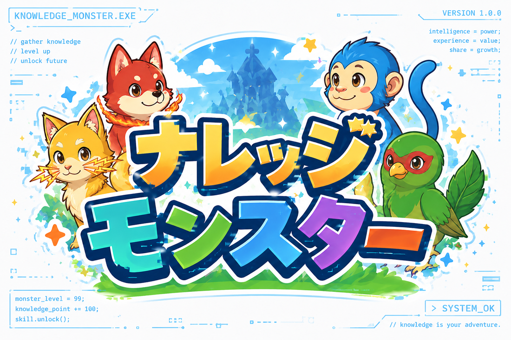

AI Creative Lab
AIクリエイティブ
AIクリエイティブ
自由研究
AIを使った表現・創作の自由研究として、文章・画像・動画・漫画など、新しい表現の可能性を探っています。 ここには、実際に作った作品や、制作途中の実験を少しずつ増やしていきます。


増えていく研究テーマ
このページは、完成作品だけではなく、作りながら学んだことも置いていく実験場です。

Mangaナレッジモンスター｛ナレモン｝
知識と経験から生まれたモンスターたちと旅する、AIと作る漫画・キャラクター企画。
Study SessionGitさんとGitHub氏のお勉強会
神様がGitとGitHubの正体をやさしく教える、シュールな読み物。毎日1話ずつ増えていきます。
Data / Map🌍 シナジーMAP（世界と日本）
世界15か国と日本の経済・産業・財政・地政学を、すべて繋がる一枚のマインドマップで探索。地図が主役の「マップモード」にも切り替えられます。
Security🛡️ AI時代のセキュリティと実行方法
AIエージェントを安全に動かすために、何を隠し何を出さないか。「家のゲーム機」のたとえと図解でやさしく。
Note📝 活動共有ノート（note風）
実行の過程・学び・つまずきを、進めながら記事にして共有。第1弾は「自宅NASにClaude Codeを導入した日」。
毎日の記録・コラム
AIと一緒に続けている、日々の記録とコラム、そして私のジャーナルです。